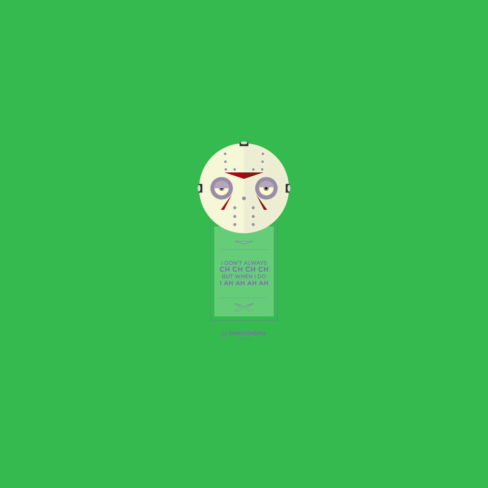

JS Stalker Exercise
Use variables, strings, prompt and console.log
- Ask for user's first name
- Ask for user's last name
- Ask for user's age
- Print out the user's full name in a sentence
- Print out the user's age in a sentence
Use variables, strings, prompt and console.log